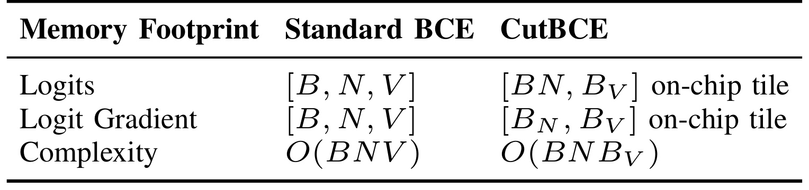
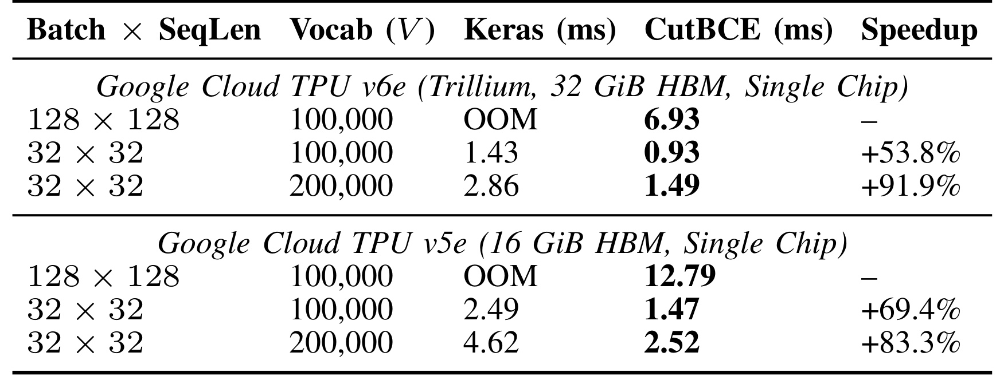
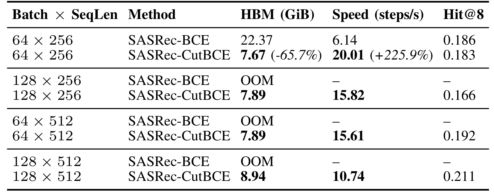

CutBCE：全词表多标签序列推荐的精确损失与梯度内核
英文标题：Cut Binary Cross Entropy: Efficient Large-Vocabulary Loss and Gradient Kernels for Sequential Recommendation。作者：Yaoyiran Li、Haowen Ning、Mohamed Hammad；三位作者机构均为 Google Cloud。论文为四页技术短文，arXiv v1 首发时间为 2026-10-04 21:47:02 UTC，即北京时间 2026-10-05 05:47:02；本笔记记录日期为 2026-10-07，主类别为推荐算法。
论文入口：arXiv:2610.05559。RecML 官方算子代码已核验链接可访问，本轮没有运行或复现代码。事实来自原始 PDF 全文及官方摘要页，核验于 2026-10-07 北京时间。
1. 背景和问题
1.1 推荐训练为何需要多标签全词表目标
用户在购物、视频和应用推荐中往往连续消费几个相互关联的物品。只预测下一次点击，会把局部顺序和偶然行为当成唯一监督信号。论文讨论的替代任务是，在一个历史位置同时预测后续多个物品，例如接下来的八个物品。这样，一个位置可以有多个正标签，物品之间不必争夺一个总和为一的类别概率。作者采用全词表二元交叉熵，让每个候选物品分别对应一个独立伯努利判断，并以稀疏的正标签标识哪些物品未来出现。这里的“独立”描述损失分解方式，并不意味着用户的不同未来兴趣在真实世界里互相独立；共享用户表示和物品嵌入依然能承载相关性。
这种任务与自回归语言模型的单个下一个词预测有实质差别。Softmax 交叉熵需要对全部词表分数计算归一化配分函数，而二元交叉熵对每类单独计算正负项。直接把语言模型的损失内核搬过来，既不能自动解决稀疏多正标签处理，也不能保证标签、归约和反向求导都符合原目标。CutBCE 借鉴分块输出投影的思路，但其数学基础是二元损失的可加性。它服务于 ID 序列推荐训练，论文并没有提出新的大模型架构，也没有把多标签推荐改写成文本生成任务。
全词表目标的吸引力在于，模型每次更新都能看到所有候选的负项贡献，避免用一次随机负采样替代整个物品集合。然而它的代价并不止物品嵌入参数本身。模型为每个批内样本的每个序列位置输出隐藏表示，再与每个物品向量做点积。批量、序列长度、词表三个维度相乘，会形成远大于输入和隐藏表示的 logits 张量。正标签虽然只有八个，负标签仍有几十万甚至上千万个；标签稀疏不会自动让投影和损失的中间结果稀疏。这是论文要解决的系统瓶颈，也是其与负采样方法的边界。
1.2 中间张量把可训练配置限制在模型之外
原文引言给出一个可核算例子：在八芯片数据并行训练中，全局批量为一百二十八，每芯片只有十六条序列；序列长度二百五十六，词表包含八十七万六千九百三十九个条目。若分数以三十二位浮点保存，一块芯片的完整 logits 就需要约十三点三八 GiB。这个数字仅指一个分数张量，并不包括参数、优化器状态、主干激活、编译器缓冲区或反向梯度。它在十六 GiB 设备上已经占去约百分之八十三点六；换成三十二 GiB 设备也未必能容纳训练时重叠出现的其他状态。因而更长历史或者更大批量可能在还没有开展效果研究之前就被内存容量挡住。
自动微分会进一步放大这种重叠。标准实现往往先把全部分数写入高带宽内存，再由损失函数读取；为了反向求导，还可能保留分数及相关中间量。密集多热标签和分数梯度也是同样规模。主干激活尚未释放时，词表侧这些张量同时驻留，峰值内存因此高于单次矩阵乘法看起来的需要。单纯把前向写成一个循环，不能保证反向也不会保存每次循环产生的块。因此论文需要控制反向计算的残留状态，而不仅仅是把大矩阵乘法拆成几个小矩阵乘法。
论文研究问题：怎样在保持全词表多标签 BCE 目标及其梯度的前提下，避免完整 logits 和 logits 梯度跨前向、反向驻留 HBM，并让该计算适配 TPU 片上内存与分布式分片？这句话依据摘要及引言的内存墙、研究缺口归纳。问题要求同时满足数学等价、数值稳定、内存生命周期受控和硬件执行有效。少看一部分负标签可以减轻负担，却改变目标；只减少张量存储但引入极慢循环，也不能满足实际训练要求。作者把可替换算子的接口维持在隐藏表示、物品嵌入和稀疏目标 ID 层面，正是为了把目标不变与执行方式变化分离。
论文中的词表还包含一个 padding 条目，因此真实物品数与模型输出维度相差一。更一般地，特殊 ID、有效历史位置和多标签集合都是训练协议的一部分，不能只对齐张量尺寸就认定任务相同。全词表平均还会把极大量负类与少量正类一起归约，导致损失尺度和排名质量之间没有简单一一对应关系。这里不讨论更换正负类权重是否能改善推荐效果，因为作者主要检验保持既有 BCE 目标的执行优化；如果同时调整标签权重或采样方案，就需要另设实验，把目标变化与内核实现变化区分开。
1.3 贡献适用边界与阅读重点
作者将此前的 Cut Cross Entropy、Liger Kernel、Tokamax 作为背景，指出大词表优化工作主要围绕 Softmax 交叉熵和不同硬件生态展开。本文的贡献是 JAX/Pallas 下精确 BCE 的前向分解、专门反向内核、内存与通信调度及训练计数指标。作者关于“首个”的表述属于论文的研究定位，本笔记不把它扩大为已经穷尽所有框架和历史实现的独立事实。读者应关注哪一块中间量被消除、哪些张量仍不可避免、哪个实验比较真正保持任务配置一致，而不是只记住摘要里最大的百分比。
原始论文没有 Figure，也没有方法框架图；全文只有三张表及一段调用示例。以下以公式和文字解释信息流，三张原表在实验章分别给出。四页短文没有充分展开消融、多随机种子或跨硬件性能曲线，因此详细讲解会区分作者已报告的实验、由公式直接得到的推导以及工程迁移建议。尤其要注意：训练监控的计数指标和评测排序指标不同，算子单芯片耗时和完整模型八芯片吞吐不同，精确目标和逐比特相同计算轨迹也不同。理解这三组区分，才能准确判断 CutBCE 对自身训练系统的价值。
2. 方法
2.1 全背景项与稀疏正标签修正
论文方法首先把一个序列位置对一个物品的二元交叉熵写成伯努利负对数似然。设该位置表示与物品向量点积得到分数，再经 sigmoid 得到概率；正标签要求该物品概率升高，负标签要求降低。把 sigmoid 直接代入对数表达式，数学上可得到背景 softplus 减标签乘分数，但对极大负分数直接算指数会溢出。原式一及稳定化后的原式二如下，后者通过绝对值让指数的输入始终不为正，便于实现稳定的浮点计算。
符号解释：$a$ 是一个历史位置的隐藏表示，$e_v$ 是第 $v$ 个物品的输出嵌入，$x_v$ 是两者的匹配分数，$p_v$ 是预测正标签概率，$y_v\in\{0,1\}$ 是是否属于后续目标集合，$\ell$ 是单类损失。此处每类概率单独归一到零到一，不对物品概率总和加约束；正负两种情况由同一表达式覆盖。分数可以为任意实数，目标却只有二元取值，这一差别支撑下面对稀疏标签的分解。
符号解释：$V$ 是包括约定特殊条目的全词表大小，$\ell(x_v,0)$ 是假定每类都为负的稳定背景损失，$-y_vx_v$ 只对正类启用，$\mathcal L_{\mathrm{total}}$ 是原式三的全词表平均。密集背景项仍遍历每个物品，稀疏的只是目标修正项。因此该变换没有舍弃负样本，也没有把全词表训练变成采样训练；工程上可仅保存少量正目标 ID，并在相关词表块内进行修正。一个正物品的背景项减去分数后，就恢复原来的正类损失，而非新增一项启发式惩罚。
随后按词表分块，例如每块四千零九十六个物品。当前块嵌入与隐藏表示相乘，只得到当前块分数，累加背景损失和该块正标签修正，再释放块结果。批与序列两个维度可展平，并进一步按位置分块，片上内核内部位置块大小为一百二十八。两种块大小控制的是不同方向：词表块限制一次考虑多少物品，位置块限制一次处理多少历史位置。尾部不足整块时需要掩码处理，不能把填充物品当真实负类，也不能把重复目标 ID 变成重复加权正项；原文数值测试覆盖这些边界，但短文没有逐项展示实现细节。
2.2 自定义 VJP 阻断反向保存
仅有上述前向累加仍不够。自动微分可能保留每一块的分数用于反向，使块张量最终累积回接近完整词表的规模。CutBCE 使用自定义向量雅可比积规定反向所需残留量：保留隐藏表示、物品嵌入和稀疏目标 ID，反向时重新计算当前块分数。数学上 sigmoid 减标签就是分数梯度，因此可以直接把它乘到物品嵌入和隐藏表示，得到两路参数梯度，不必先存完整分数梯度。原式四把展平后的位置矩阵写为：
符号解释：$A$ 是展平批和序列后的隐藏表示矩阵，$E$ 是全词表嵌入，$X$ 和 $Y$ 分别表示数学上的完整分数和多热标签，$\nabla_A$ 与 $\nabla_E$ 分别是对表示和嵌入的梯度；完整矩阵记号用来说明等价关系，实际执行不会据此创建密集 $X$ 或 $Y$。式中仅展示词表平均因子；若再对位置平均，需要额外位置归约因子，实际排除 padding 位置。接入有权重、序列掩码或不同 loss reduction 的模型时，必须对齐这些归一化规则，否则内核局部公式正确仍可能改变有效训练步长。
反向块的梯度累积具有两个方向。对隐藏表示而言，要把不同词表块对同一位置的贡献相加；对物品嵌入而言，要把不同位置块对同一物品的贡献相加。作者在 Pallas TPU 内核中将嵌入梯度在片上暂存并累积，再用连续 DMA 写回 HBM，以减少重复读写。重新计算点积会增加计算工作，但避免长期存储和搬运巨型中间张量，有机会让总耗时下降；这解释了为什么“重算”与“加速”并不冲突。不过表示、嵌入、输出梯度和优化器状态依旧要存在，本文消除的是分数侧中间量，不是训练所需的一切大张量。
从单物品梯度还可直接理解修正项的作用：背景项导数为预测概率，正目标的线性项导数减一，合起来正好是概率减标签。负类只保留概率贡献，正类则把误差推向提高该物品分数。重算当前块时需要保持与前向相同的掩码和目标语义，但不需要保存之前的全部预测概率。这也说明数值核验为何必须同时检查表示梯度和嵌入梯度：只对齐标量损失不能排除转置、分片偏移或归约轴错误，两路梯度也可能对不同实现问题表现出不同敏感度。
2.3 VMEM 预算与分片通信
执行体系是混合的：前向采用 JAX/XLA 的扫描和分块，反向使用专门 Pallas TPU 内核。TPU 的 VMEM 是片上暂存空间，HBM 是更大的片外高带宽内存，前者容量有限但有利于减少中间量往返。作者查询设备的实际 VMEM 容量，根据预算决定位置方向是否需要额外外层分块，外层块顺序处理。固定一个适用于所有芯片和形状的块配置很容易出现片上空间超额；动态预算让词表投影、梯度累积和临时空间能同时容纳。论文没有给出完整预算常数和所有形状的选择曲线，因此“自动调度”还不能等同于已经证明全形状最优。
分布式版本通过 JAX 的 shard_map 处理数据、FSDP 或词表并行网格，把嵌入复制约束等通信从内部循环提到外面，维护每个分片的词表偏移，并沿相应网格轴执行求和归约。词表偏移确保全局正目标 ID 在局部块中命中正确位置；全局梯度归约则确保本地计算贡献回到正确的全局目标。若在每一小块都重复做相同的复制或通信，分块次数越多通信开销越大，内存收益可能被抵消。原文强调这些机制的设计，但端到端主表只展示数据并行；不同并行组合的收益、通信瓶颈和规模上限仍需另外测量。
2.4 计数监控与推荐任务衔接
训练指标如果再次构造完整分数，会从监控路径破坏损失内核节省的内存。Cut Metrics 在处理块时聚合真正例、假正例、假负例和真负例，最终只返回按批和位置组织的计数，可据此计算二元准确率、precision、recall 和不同权重的 F 分数。所谓零额外 HBM 开销，强调不再引入与全词表同规模的辅助张量；阈值判断和计数归约仍有实际计算工作，不能解释成整个指标运算没有任何时间代价。尤其在极稀疏正类任务里，二元准确率容易被负类主导，不能替代对推荐列表质量的验证。
应用层是基于 SASRec 思路、使用 GPT-2 Transformer 主干的因果非自回归多标签序列模型。每个非填充历史位置同时预测后续八个 ID，损失内核接收激活、嵌入、目标、权重、词表块大小和分片规格；它不修改主干的因果可见性。评测则另起独立流程，用每个用户最后一个非填充位置的表示生成全词表分数，再排序取八个候选。Cut Metrics 不负责排名，完整 logits 仍会在评测阶段使用。这是工程集成必须保留的生命周期界限：训练可以流式求损失，排序评测仍需要自己的容量规划，不能从训练峰值内存下降推断全套推荐流水线的峰值都下降同样比例。
3. 实验结果
3.1 内存复杂度对照：被移除的具体对象
原文 Table I 是理论内存对象对照，列出 logits、分数梯度和中间工作区的复杂度。它没有包含主干参数、优化器状态或完整训练峰值，下面先用它确定机制，再阅读两类实测表。

表中标准 BCE 的 logits 和 logits 梯度都按批量、序列长度、完整词表三个维度保存；CutBCE 对应两项是位置块与词表块组成的片上 tile。复杂度行从三个全维度的乘积变成两个块维度的乘积，表示一次活跃的分数中间工作区受到块大小限制。这里容易混淆的是，表中的位置块符号带下标，它不是简单把批量和序列长度连写成一个名字；原文脚注明确说明批和序列先展平，再层级分块，并以内核位置块一百二十八为例。因而所谓片上 tile 不应被理解为把整个批序列对四千个物品的结果无条件塞入片上空间。
该表支持的直接结论是，前向分数与反向分数梯度不再以完整词表形状长期驻留 HBM，而不是所有内存都与词表大小无关。物品嵌入和嵌入梯度依然随词表增长，优化器也可能保存相应状态；隐藏表示和主干激活仍随批量、历史长度增长。因此这一优化主要拆掉全局规模中间量，不能取消词表参数量带来的容量限制。它还只讨论峰值工作区，并没有把遍历词表的总计算复杂度减少到只依赖块大小：所有块都需要处理。把这张表与后面实测内存一起看，才能区分算法空间机制和完整模型实际收益。
3.2 单芯片算子基准：损失与梯度的耗时
Table II 在 TPU v6e 和 v5e 单芯片测量隔离的损失加梯度步骤。输入表示和物品嵌入来自合成正态分布，目标 ID 均匀抽样，隐藏维度一百二十八、每位置八个正目标；完成 JIT 编译后对五百次稳态迭代取平均。该口径没有 Transformer 主干或优化器开销。

v6e 的可运行小配置在批量三十二、序列长度三十二、十万词表时，标准 Keras 为一点四三毫秒，CutBCE 为零点九三毫秒；二十万词表时从二点八六变成一点四九毫秒。作者分别报告速度增加百分之五十三点八与九十一点九，这个速度百分比按基线耗时除以新耗时再减一计算。若换成耗时节省口径，十万配置约下降百分之三十五，二十万配置约下降百分之四十七点九，而不是时间下降百分之九十一点九。词表变大后报告的加速比例更高，与减少大张量 HBM 读写的解释一致，但仅这两点不能确定任意词表规模下的函数规律。
v5e 的对应十万配置是二点四九到一点四七毫秒，速度增加百分之六十九点四；二十万配置是四点六二到二点五二毫秒，速度增加百分之八十三点三。同硬件内部这些比值能比较两种算子，跨 v5e/v6e 比较绝对耗时还包含设备能力差别。两个硬件的批量与序列都为一百二十八、词表十万配置，标准 BCE 均 OOM，CutBCE 分别需要六点九三毫秒和十二点七九毫秒。表中速度列使用横线，原因是没有可测的基线耗时；不能把 OOM 解释成无限倍加速，也不能推算一个没有实际运行的标准算子时间。
数值等价检查在批量和序列均三十二、词表十万时进行。作者报告两个硬件的相对 loss 误差在一点一乘十的负七次方以内，表示和嵌入梯度的相对二范数误差在七点一乘十的负五次方以内；并说明开源测试覆盖不对齐形状、padding、重复目标 ID、Pallas 与纯 JAX 后端。这样的验证支持目标和求导没有被近似采样替换，但浮点归约顺序改变可以带来微小误差，不能称逐比特一致。本轮仅核验论文报告及代码链接，没有执行单元测试，因此这些误差是作者测量结果，复现状态应保持未运行。
3.3 八芯片端到端训练：内存、吞吐与排序效果
Table III 的任务是 Yambda-50M 过滤版本，保留交互数大于三十的九千零七十四名用户、约四千六百四十六万次交互，平均序列长度五千一百二十点五六。真实物品有八十七万六千九百三十八个，增加一个 padding 条目后，模型词表大小是八十七万六千九百三十九。模型使用三层 GPT-2 主干、四个注意力头、隐藏维度二百五十六，AdamW 训练三十万步，学习率五乘十的负四次方，预热五千步。训练运行在八芯片 TPU v6e 的二乘四拓扑上，每芯片三十二 GiB HBM。

唯一有可运行标准 BCE 参照的同形状配置，是全局批量六十四、序列长度二百五十六。每芯片峰值 HBM 从二十二点三七 GiB 降到七点六七 GiB，节省十四点七零 GiB，即约百分之六十五点七。训练吞吐从每秒六点一四步增至二十点零一步，比例约三点二五九倍，速度增幅约百分之二百二十五点九。按同一个训练步骤反算，时间从约零点一六二九秒下降到零点零五零零秒，约节省百分之六十九点三。三种说法描述同一测量，但其分母和单位不同；速度增幅不能被翻译成训练时间减少百分之二百二十五点九。
同一配置下 Hit@8 为标准方法零点一八六、CutBCE 零点一八三，绝对差零点零零三，即零点三个百分点，方向上略低。作者称准确率可比，但没有给出多随机种子、方差或统计显著性信息，不能据此证明严格等效，更不能宣称精度提升。该指标要求每名用户的八个留出目标里，至少有一个进入模型排名前八，就计一次命中；它不是把命中数量除以八的 Recall@8，也不是每个历史位置的二元分类准确率。数学目标保持精确并不保证训练最终排序指标完全相同，浮点轨迹、优化随机性与评测条件都需要在复现中另外控制。
其余三种形状的标准 BCE 都 OOM。CutBCE 在批量一百二十八、长度二百五十六时为七点八九 GiB、每秒十五点八二步、Hit@8 零点一六六；批量六十四、长度五百一十二时也是七点八九 GiB、每秒十五点六一步、Hit@8 零点一九二；批量一百二十八、长度五百一十二时为八点九四 GiB、每秒十点七四步、Hit@8 零点二一一。它们证明所报告配置能够训练，内存收益扩大了可探索范围。最后一行虽然指标最高，却同时改变批量和序列长度，缺少同形状 BCE 参照，不能把指标差额全归因于 CutBCE 的损失算法。
3.4 数据划分、设备隔离与证据缺口
对于长度为 n 的用户序列，测试用前 n 减八个物品作为历史，最后八个为目标；验证用前 n 减十七个作为历史、随后的八个为目标；训练输入是前 n 减二十六个物品，每个非填充位置预测接下来的八个。各输入仅保留最近的指定历史长度，并补齐 padding。该划分与最后有效位置评测共同限定了结果口径，复现时不能把不同截断、滑窗或目标重叠约定的实验直接横向比较。原文没有提供这里每种设置的用户级效果分布，因此无法判断收益是否集中在少数长历史用户。
主表的批量是全局批量，八芯片数据并行使每芯片分别接收八或十六个用户；单芯片算子表中的批量则直接作用于那一块芯片。训练、验证和测试分别使用物理独立的 TPU slice，评测与训练不会争抢同一设备，所以每秒二十步不能被看成训练与完整排名评测共同占用同一个八芯片切片时的业务吞吐。实际平台若评测与训练共享资源，需要重测端到端容量。独立评测也意味着训练内存优化并未直接证明全词表排名阶段的 OOM 已经消除。
另一个比较约束是固定三十万训练步并不自动等于固定训练样本预算。批量翻倍时每步涉及更多用户，历史长度改变时每步受监督的位置数也可能变化；若关注模型效果，应补充等有效位置数或等计算预算的对照。若关注系统成本，则需要报告从编译、数据读入到达到目标指标的总用时，不能只把稳态每秒步数乘一个步数当成完整费用估计。原文没有提供这些扩展测量，因此本笔记保留步吞吐的精确定义。
实验总体形成了连贯证据：内存对象对照解释机制，微基准展示损失与梯度内核表现，真实模型展示训练可运行性及吞吐变化。但三表没有逐项关闭数学分解、自定义 VJP、VMEM 调度、通信提升或 Cut Metrics 的消融，也没有展示与其他精确 BCE 内核的竞争比较。四页短文同样没有 GPU 实验，不能将 TPU 的速度比例直接推广到 CUDA/Triton、不同数值精度或不同分片策略。作者的结果足以支持这套 TPU 配置上的系统收益，尚不足以确定每个模块贡献或所有推荐模型的普遍性能。
4. 总结
4.1 对推荐系统和大模型的启发
CutBCE 最值得记住的是，损失函数的数学形式与张量驻留策略可以拆开设计。稀疏正标签与密集背景项分解让目标保持全量，自定义 VJP 让反向重算成为可控选择，片上累积与分片通信让这个选择在 TPU 上获得实际训练收益。对推荐团队而言，首先应定位自己的峰值内存是否由全词表投影和 BCE 中间量主导，再决定是否引入此类算子。若实际采用候选池训练、负采样或者较小输出空间，最大瓶颈可能在主干或嵌入优化器，论文报告的显存降幅就不具备直接可比条件。
另一个推荐启发是，系统优化可以为长历史和较大批量打开实验空间，但需要把“能跑”与“效果更好”分开验证。主表较长序列配置的 Hit@8 上升提供了进一步研究线索，并未隔离历史信息增多、训练步数、有效样本数及优化超参的影响。稳妥实验是在相同模型和数据划分下，先用可运行形状验证替换算子的等价性，再单独改变历史长度或批量，报告每次变化的吞吐、内存及多种排序指标。否则算子优化带来的可训练性容易与模型改进混在同一叙述里。
对大模型工作的启发主要是方法论迁移：输出层中间张量是否必须保留，应由目标结构和反向需求决定。对多标签工具选择、候选属性预测或其他独立伯努利任务，背景与稀疏修正的分解值得考察；对普通 next-token Softmax，应使用符合归一化目标的内核，不能直接替换成 BCE。RAG 和个性化系统还可以借鉴训练指标流式聚合与正式排名评测分离的设计，减少为了监控而重新构造大矩阵；但相关应用没有在本文评测，迁移只是工程推论。
4.2 三类局限与后续跟进
第一类局限是任务与数据范围。端到端证据来自一个过滤后的长序列数据集和一个三层主干，用户数量与物品规模的比例、序列长度分布都有特定性。它不证明广告排序的 AUC、短会话推荐、在线业务指标或多模态模型会得到相同收益，也没有线上服务评测。第二类是效果证据：同形状 Hit@8 略降且无统计显著性报告，其他配置缺少同形状基线，多标签命中至少一个的指标又不能描述列表覆盖与整体召回。第三类是系统证据：只验证 TPU 两代硬件，模块缺少消融，不同分片组合及评测资源共享情形未量化，本轮代码也没有运行。这三类边界需要保留，不能被“精确算子”一句话覆盖。
接下来可按三个具体问题跟进。先复现 loss 和两路梯度的相对误差，覆盖重复 ID、padding、词表尾块及位置权重，确认自有数据语义。再在真实模型里用内存分析器确认完整分数没有跨前后向存活，并分别计量主干、损失、优化器及通信耗时，检查是否确实减少 HBM 往返。最后开展多随机种子排序评测，补充 Recall 与 NDCG 等指标，分别研究长序列和大批量，并在目标 GPU 或不同 TPU 网格上重新测量。这样才能判断其价值来自目标保持下的执行改造，还是仅来自一组有利硬件与形状。